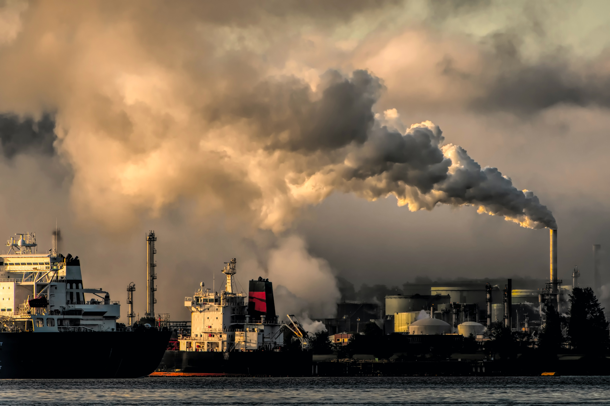
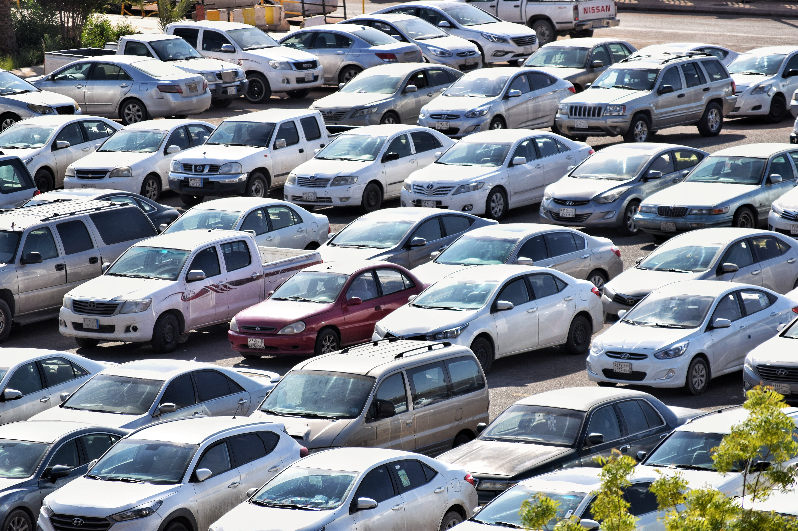

Ever since the industrial revolution, humans have steadily been destroying the environment that brought us into existance in the first place. There needs to be action or else by 2050 the Earth will be unrecoverable.
One major issue includes the melting of icecaps. Not only does this add to the volume of the ocean, but diseases that have been trapped in ice for centuries are let loose.

Factories spew greenhouse gases into the air, contributing to the thickening of the ozone layer. This prevents heat from the sun and ends up turning the Earth into a convection oven that gets hotter as more CO2 spews into the air.
Because of the heating Earth, water evaporates quicker and causes droughts. In other places however, the same affects may cause floods instead.
Human Contribution
Wake up! Climate change is a real thing!
Human Contribution
What is overconsumption?
Overconsumption is an act of excessively consuming something. How does this come to play in our daily lives? We buy clothes constantly trying to keep up with the trends or buy products recommended by celebrities or even eat too much food.

What is overproduction?
Since we consume more than necessary, producers need to produce more products. This is called overproduction and it goes hand in hand with overconsumption. Because we consume a lot, others need to produce more in order to keep up.
Why is it such a big deal?
This overproduction and overconsumption causes damage to the environment and also the economy. The act of overproducing already increased the pollution level as well as malicious gases which contribute to global warming. This also caused irregular weather and natural disasters all around the world such as hurricanes and wildfires. And industries like fashion, agriculture, automobile, and manufacturing overproduce due to consumers, more specifically privileged people, buying excessively.
Human Contribution
We can't keep hurting our planet!
Generating Power
Introduction
Generating power is a big contributor to climate change. We burn fossil fuels such as coal, oil, or gas to generate power. And this act causes carbon dioxide and nitrous oxide (greenhouse gases) to cover the earth’s atmosphere, therefore trapping the sun’s heat.
How are big cities contributing to climate change?
According to UN Habitat, cities consume 78% of the world’s fossil fuel and produce more than 60% of greenhouse gas emission. However, big cities around the world have begun to reduce greenhouse gas emission. In low-income communities however, the damage is more extensive. They have unstable structure so it is more susceptible to disasters, and the lack of resources regarding health related issues.
How is air pollution contributing to climate change?
The air pollution is also exacerbated by the act of burning fossil fuels. According to the World Health Organization (WHO), 93% of children breathe toxic air and 1.8 billion children breathe air so polluted that it puts their health at risk. They estimate that about 600,000 children died from respiratory infection due to air pollution in 2016. The report highlights that more than 40% of the population, including 1 billion children under 15, is exposed to high levels of air pollution mainly from common household technologies.
Now, it's up to us to do our part.
What can we do?
One thing that people can do is contact a Senator or other Representative to press the issue of cliamte change. Once the people's cries become too loud to ignore, the government will have to take action. Make sure to be polite but firm in your email.
Another thing people can do is to try to reduce their energy expendeture. Not only does this include using electronics less, but it also includes buying good locally or second hand. This lowers your greenhouse gas contribution individually because the goods you buy travel less to get to you.
Referencing overconsumption, another thing you can do is just to buy less things. This reduces waste, which includes reducing the physical product wasted, and all the energy that went into making that product.